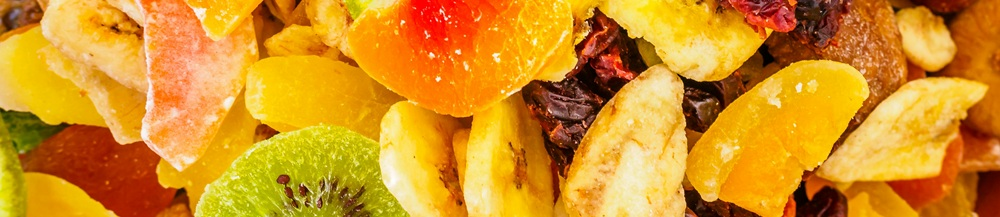

Teknologi di Balik Jajanan Lokal Kemasan: Rahasia Pengawetan yang Bikin Tahan Lama
Dipublikasikan pada 13 Agustus 2025

Kemudahan berbelanja di online marketplace telah merevolusi cara kita menikmati jajanan lokal. Jika dulu kita harus jauh-jauh datang ke daerahnya, kini aneka makanan khas dari Sabang sampai Merauke bisa sampai di depan rumah hanya dengan beberapa klik.
Selain memudahkan pembelian, online marketplace juga memperluas pilihan toko yang tersedia. Ini menjadi kabar gembira bagi para pencinta kuliner nusantara dan mereka yang merindukan cita rasa kampung halaman.
Namun, tahukah Anda, di balik kemudahan ini, ada teknologi pengawetan makanan yang terus berkembang? Teknologi inilah yang memungkinkan makanan tahan lama meski harus dikirim lintas daerah. Dua metode paling umum yang digunakan untuk pengawetan makanan lokal adalah pengeringan dan penggorengan.
Pengeringan dan Penggorengan: Dua Metode Pengawetan Populer
Contoh metode pengeringan bisa kita lihat pada keripik buah khas Batu, Jawa Timur. Dibuat dari buah segar seperti apel, nangka, atau salak, jajanan ini diproses dengan cara dikeringkan. Proses ini mengurangi kadar air secara drastis, sehingga menghasilkan tekstur renyah, rasa manis alami, dan masa simpan yang lebih panjang. Cocok sebagai camilan sehat atau topping sereal.
Metode penggorengan juga sangat populer, seperti pada produk sale pisang. Pisang dijemur hingga kadar airnya berkurang, lalu dilapisi adonan tepung dan digoreng hingga garing. Hasilnya adalah camilan manis dan renyah yang tahan lama, bahkan tanpa menggunakan bahan pengawet kimia.
Jadi, di balik camilan lokal yang kita nikmati dengan mudah, tersimpan proses panjang yang melibatkan pengetahuan, kearifan lokal, dan teknologi pengolahan pangan.
Untuk lebih memahami proses pengawetan ini, Anda dapat menonton video singkat tentang pengolahan keripik buah dan sale pisang di akhir artikel. Semoga informasi ini bermanfaat dan menambah apresiasi kita terhadap kekayaan jajanan nusantara.